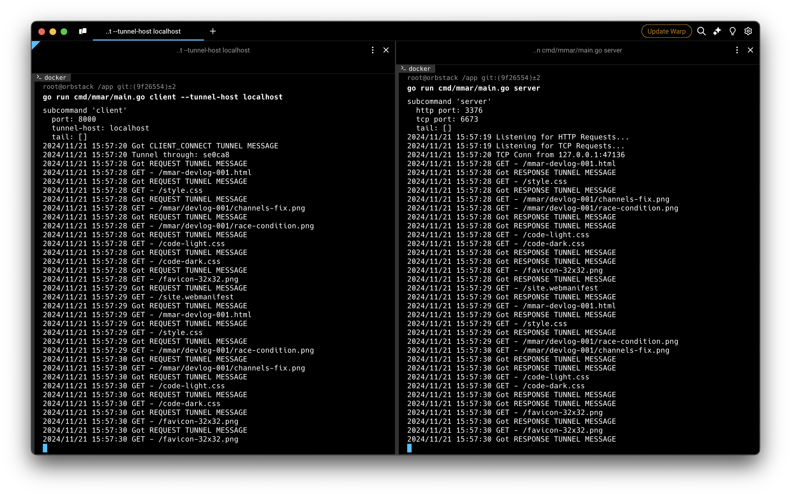
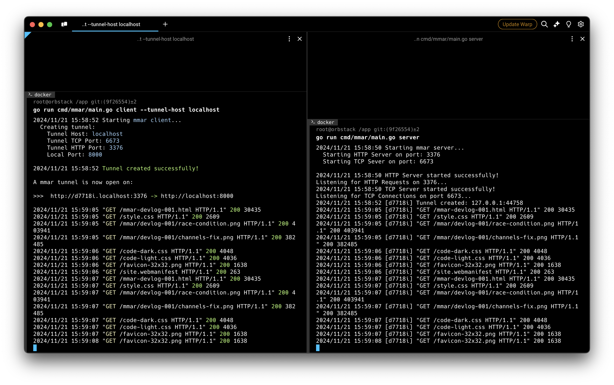

mmar - Devlog 4
This post is part of a devlog series documenting my progress building mmar, a cross-platform tunnel that exposes your localhost to the world. If you’d like to follow along from the beginning, you can find all the devlogs here.
Progress Update
In this devlog we’ll go over some new quality of life additions for users of mmar, both for normal users running mmar clients or users rolling out their own mmar server. The two main changes introduced were:
- A way to know the number of tunnels that are currently open at any given time.
- Clear information and instructions upon running a mmar client.
Let’s dive in to take a closer look at these changes.
Server Stats
While building mmar, I figured I wanted a way to see some information or stats related to the current state of the server. The bare minimum was to at least know how many tunnels are currently open, along with the their IDs (subdomains). At the same time, I didn’t want to overcomplicate things, building a webpage and rolling complex auth, so I opted for getting these stats as a JSON and implementing Basic Authentication.
You may have noticed in a previously shared snippet of code, I reserve the stats subdomain as a special subdomain, to avoid the unlikely event of it being randomly generated for a tunnel. That subdomain is how the operator of the mmar server can access the current state of the server. As the operator you’re free to access this in the browser, or query it as an API endpoint and build out your own webpage and UI to showcase it.
Gathering Stats
Since we are returning a JSON, and we already store client information in a map, our job is already somewhat done for us. If you recall, we stored the client information on the server as a map[string]ClientTunnel where the key string represents the ID of the client tunnel. Getting the number of tunnels is as easy as len(clients). In addition to the number of tunnels, I also wanted information about them, i.e. their IDs and when the tunnel was created. To do that, we need to add a new field in the Tunnel struct that contains a timestamp of when it was created, additionally it would be nicer to get a list of clients containing this information rather than an object.
Sure enough, this change was quite straightforward. Here is the updated Tunnel struct with the new field:
type Tunnel struct {
Id string
Conn net.Conn
CreatedOn time.Time
}
We introduced a new method that is called whenever the stats subdomain is accessed:
func (ms *MmarServer) handleServerStats(w http.ResponseWriter, r *http.Request) {
stats := map[string]any{}
// Add total connected clients count
stats["connectedClientsCount"] = len(ms.clients)
// Add list of connected clients, including only relevant fields
clientStats := []map[string]string{}
for _, val := range ms.clients {
client := map[string]string{
"id": val.Id,
"createdOn": val.CreatedOn.Format(time.RFC3339),
}
clientStats = append(clientStats, client)
}
stats["connectedClients"] = clientStats
// Marshal the result
marshalledStats, err := json.Marshal(stats)
if err != nil {
log.Fatalf("Failed to marshal server stats: %v", err)
}
w.WriteHeader(http.StatusOK)
w.Write(marshalledStats)
}
func (ms *MmarServer) ServeHTTP(w http.ResponseWriter, r *http.Request) {
// Extract subdomain to retrieve related client tunnel
subdomain := utils.ExtractSubdomain(r.Host)
// Handle stats subdomain
if subdomain == "stats" {
ms.handleServerStats(w, r)
return
}
// ... remaining code ...
}
And here’s an example of the stats we see:
{
"connectedClients": [
{
"createdOn": "2024-11-20T12:49:00Z",
"id": "pxsg4o"
},
{
"createdOn": "2024-11-20T12:45:53Z",
"id": "t6vx56"
}
],
"connectedClientsCount": 2
}
Basic Authentication
Now that we have this helpful data, we don’t necessarily want it to be public and at the same time, I didn’t want to roll out full authentication, which would require storing information in a database, again the goal is keep it extremely simple with no dependancies.
Naturally what seemed to fit the bill was to put it behind Basic Authentication. What’s nice about Basic Authentication is that if you access the page from the browser, you get the browser’s native popup asking the user to enter their credentials. Alternatively the user also has the ability to make a request to the stats url providing the username and password in the request, for example https://<username>:<password>@stats.mmar.dev/.
To add additional layers of security, rather than directly comparing the username and password with the ones expected (i.e. stored in server’s environment variables), I store the sha256 hashes for each rather than plain text. Furthermore, I make use of the built in subtle.ConstantTimeCompare rather than a normal ==, to avoid potential time-based attacks. All of this might be overkill, but it’s good practice in general and implementing it was not that complex.
Let’s first look at how we validate the credentials provided, assuming we have the hash of the username and password stored as environment variables, if they are not, I have default credentials defined as constants, both set to admin:
// Included in constants/main.go:
// SERVER_STATS_DEFAULT_USERNAME = "admin"
// SERVER_STATS_DEFAULT_PASSWORD = "admin"
// Check if provided Basic Auth credentials are valid
func ValidCredentials(username string, password string) bool {
// Compute Hash for provided username and password
usernameHash := sha256.Sum256([]byte(username))
passwordHash := sha256.Sum256([]byte(password))
// Receive expected Hash for username
envUsernameHash, foundUsernameHash := os.LookupEnv("USERNAME_HASH")
var usernameDecodedHash []byte
if foundUsernameHash {
usernameDecodedHash = decodeHash(envUsernameHash)
} else {
// Fallback to default if not set
defaultUsernameHash := sha256.Sum256([]byte(constants.SERVER_STATS_DEFAULT_USERNAME))
usernameDecodedHash = defaultUsernameHash[:]
}
// Receive expected Hash for password
envPasswordHash, foundPasswordHash := os.LookupEnv("PASSWORD_HASH")
var passwordDecodedHash []byte
if foundPasswordHash {
passwordDecodedHash = decodeHash(envPasswordHash)
} else {
// Fallback to default if not set
defaultPasswordHash := sha256.Sum256([]byte(constants.SERVER_STATS_DEFAULT_PASSWORD))
passwordDecodedHash = defaultPasswordHash[:]
}
// Compare them to check if they match and are valid
validUsername := subtle.ConstantTimeCompare(usernameHash[:], usernameDecodedHash) == 1
validPassword := subtle.ConstantTimeCompare(passwordHash[:], passwordDecodedHash) == 1
return validUsername && validPassword
}
We then add this check to the top of the handleServerStats function that we saw above. If the credentials are not provided or are invalid, it will return a 401, and if you’re accessing this through the browser, it will automatically prompt you again for the credentials:
func (ms *MmarServer) handleServerStats(w http.ResponseWriter, r *http.Request) {
// Check Basic Authentication
username, password, ok := r.BasicAuth()
if !ok || !utils.ValidCredentials(username, password) {
w.Header().Add("WWW-Authenticate", "Basic realm=\"stats\"")
w.WriteHeader(http.StatusUnauthorized)
return
}
// ... rest of the code ...
A Note on Authenticating from the Browser
Once you authenticate using Basic Authentication in the browser, it seems like there is no proper way to “logout” unless you close the whole browser. That’s apparently by design, even in the RFC there is no mention of logging out. There are a few workarounds to get around this in browser. However for our use case, I think it should be fine, as it’s mainly designed to be accessed as an API endpoint.
User Friendly Logs
I really appreciate small details in tools/libraries. Things like well structured logs, colors that highlighted and indicated certain information all falls under that, and shows that the developer really put some thought and effort into the tool developed.
So I wanted to give users of mmar the same experience, leaning more on the mmar client as that is where I anticipate the majority of the users would be. I already had logs implemented, however it lacked certain things like structuring them in a common format and colors. Additionally, I wanted the user to know what was going on when they ran the mmar client, and information about how to access their tunnel once it has been created.
Colored and Formatted HTTP Logs
I went with the Common Log Format for the logs, minus the host, ident and authuser for now, since I’m not sure if this information would be useful to the user, but that could change if that is not the case. I also added colors to the HTTP logs for nicer visuals. On the server side, since we want all the HTTP logs to be in this format as well, it makes sense to create a simple middleware that handles this for all HTTP logs, so it can it can be added like this:
mux.Handle("/", logger.LoggerMiddleware(&mmarServer))
To do so, the middleware would need to take in a http.Handler and also return a http.Handler to match the same signature that mux.Handle expects. To do this, we can return a http.HandlerFunc that takes a function with http.ResponseWriter and *http.Request as parameters. That way we should have access to the response information we want to include in the logs from the http.ResponseWriter.
However, there are 2 pieces of information that cannot be directly extracted from the ResponseWriter; the response status code and the number of bytes returned to the client. To include them in the ResponseWriter for easy retrieval, we could create a new struct that acts as a wrapper to the ResponseWriter and “override” the Write and WriteHeader methods (that are each called when writing the content sent to client and the response status code respectively) to store them in fields of the wrapper struct.
// Wrapping ResponseWriter to capture response status code and content length
type WrappedResponseWriter struct {
http.ResponseWriter
statusCode int
contentLength int64
}
// Capture the response status code then call the actual ResponseWriter's WriteHeader
func (wrw *WrappedResponseWriter) WriteHeader(statusCode int) {
wrw.statusCode = statusCode
wrw.ResponseWriter.WriteHeader(statusCode)
}
// Capture the response content length then call the actual ResponseWriter's Write
func (wrw *WrappedResponseWriter) Write(data []byte) (int, error) {
wrw.contentLength = int64(len(data))
return wrw.ResponseWriter.Write(data)
}
A quick note on this approach: It’s straightforward and works quite well for this use case, however in a more complicated use case that involves further processing or interactions with the
ResponseWriter, simply wrapping would lose some functionality provided by other interfaces thatResponseWriterimplements. You can read more about it in the discussion here.
Now’s lets put our middleware together:
// Logger middle to log all HTTP requests handled
func LoggerMiddleware(h http.Handler) http.Handler {
return http.HandlerFunc(func(w http.ResponseWriter, r *http.Request) {
// Initializing WrappedResponseWrapper with default values
wrw := WrappedResponseWriter{ResponseWriter: w, statusCode: http.StatusOK, contentLength: 0}
h.ServeHTTP(&wrw, r)
LogHTTP(r, wrw.statusCode, wrw.contentLength, true, false)
})
}
It creates an instance of WrappedResponseWriter we defined, passes it to and calls the passed in handler’s ServeHTTP, then passes in the extracted information to our LogHTTP function that proceeds to print the logs in the proper format and colors. Additionally I added the client’s ID (subdomain) to the logs on the server side, to distinguish the logs belong to which client.
The LogHTTP function is bit long and not that interesting, but I will share it’s signature and some parts of it to give you the general idea:
// Log HTTP requests including their response's status code and response data length
func LogHTTP(req *http.Request, statusCode int, contentLength int64, includeSubdomain bool, colored bool) {
// ... some code here ...
// Color HTTP method
var coloredMethod string
switch req.Method {
case "GET":
coloredMethod = ColorLogStr(constants.YELLOW, req.Method)
case "POST", "PATCH", "PUT":
coloredMethod = ColorLogStr(constants.BLUE, req.Method)
case "DELETE":
coloredMethod = ColorLogStr(constants.RED, req.Method)
default:
coloredMethod = req.Method
}
log.Printf(
"%s\"%s %s%s%s %s\" %s %d",
subdomainInfo,
coloredMethod,
html.EscapeString(req.URL.Path),
hasQueryParams,
req.URL.RawQuery,
req.Proto,
strStatusCode,
contentLength,
)
}
On the client side, we use the LogHTTP function directly since we don’t make use of the middleware.
Helpful mmar Client start logs
When a user first installs mmar and runs mmar client, it’s important for them to see information about what is happening and where to go from there. In our case, it’s simply logging the configuration they are attempting to create a tunnel under, and if successfully created, how they can access it, highlighting the important parts.
To do so, I simply stored the config options in a struct and passed it in to the client (likewise for the server), and added a few helper functions that took care of logging.
Here’s the config options for the client:
type ConfigOptions struct {
LocalPort string
TunnelHttpPort string
TunnelTcpPort string
TunnelHost string
}
And here’s how the logging functions are defined, for when the client first starts and when a Tunnel is created:
func LogStartMmarClient(tunnelHost string, tunnelTcpPort string, tunnelHttpPort string, localPort string) {
logStr := `Starting %s...
Creating tunnel:
Tunnel Host: %s
Tunnel TCP Port: %s
Tunnel HTTP Port: %s
Local Port: %s
`
log.Printf(
logStr,
ColorLogStr(constants.BLUE, "mmar client"),
ColorLogStr(constants.BLUE, tunnelHost),
ColorLogStr(constants.BLUE, tunnelTcpPort),
ColorLogStr(constants.BLUE, tunnelHttpPort),
ColorLogStr(constants.BLUE, localPort),
)
}
func LogTunnelCreated(subdomain string, tunnelHost string, tunnelHttpPort string, localPort string) {
logStr := `%s
A mmar tunnel is now open on:
>>> http://%s.%s:%s %s http://localhost:%s
`
log.Printf(
logStr,
ColorLogStr(constants.GREEN, "Tunnel created successfully!"),
subdomain,
tunnelHost,
tunnelHttpPort,
ColorLogStr(constants.GREEN, "->"),
localPort,
)
}
For the server, it’s the same idea, however a little simpler, as I didn’t add colors since these logs could likely be accessed through ssh/tmux and the like. I’m not sure all of them would support colors, so sticking to the safe side.
Results
So after all this, the most important question is how does it look like? Well here’s the before and after screenshots:
Before

After

Much better!
Miscellaneous
Finally, I did a little bit of code clean up and bug fixes here and there. There’s a bug in particular I fixed that I thought I’d share. If you remember previously while implementing graceful shutdown of the client, I introduced a context that is cancelled when the client is shutting down, and I had a select statement that would check if the context was cancelled to terminate the goroutine that awaits messages from the server. It looked something like this:
func (mc *MmarClient) ProcessTunnelMessages(ctx context.Context) {
for {
select {
case <-ctx.Done(): // Client gracefully shutdown
return
default:
tunnelMsg, err := mc.ReceiveMessage()
if err != nil {
// ... some code ...
if errors.Is(err, net.ErrClosed) {
logger.Log(constants.DEFAULT_COLOR, "Tunnel connection disconnected from Server. Exiting...")
os.Exit(0)
}
// ... more code ...
}
}
}
}
This code is not entirely correct. The mc.ReceiveMessage() blocks indefinitely waiting to read data (messages) from the TCP connection from the server, which is technically fine, however that doesn’t give a chance for the select statement to check if the context has been cancelled or not. So more often than not, when you shutdown the client, instead of it gracefully terminating, it would get the net.ErrClosed error, since the server closes the connection after a timeout once it’s informed that the client is shutting down, which is not great.
A simple way to fix this was to add a read timeout on the client Tunnel’s underlying net.Conn. This allows for the loop to go through and runs the select statement again to check if the context has been cancelled to handle it accordingly. Since we already have GRACEFUL_SHUTDOWN_TIMEOUT defined, it would be sufficient to set the read timeout to be half of that.
Here’s the updated correct version:
func (mc *MmarClient) ProcessTunnelMessages(ctx context.Context) {
for {
select {
case <-ctx.Done(): // Client gracefully shutdown
return
default:
// Set read deadline to half the graceful shutdown timeout to
// allow detections of graceful shutdowns
readDeadline := time.Now().Add((constants.GRACEFUL_SHUTDOWN_TIMEOUT / 2) * time.Second)
mc.Tunnel.Conn.SetReadDeadline(readDeadline)
tunnelMsg, err := mc.ReceiveMessage()
if err != nil {
// ... some code ...
if errors.Is(err, net.ErrClosed) {
logger.Log(constants.DEFAULT_COLOR, "Tunnel connection disconnected from Server. Exiting...")
os.Exit(0)
} else if errors.Is(err, os.ErrDeadlineExceeded) {
continue
}
// ... more code ...
}
}
}
}
Now it consistently exits correctly when the context is cancelled.
Thanks!
Thanks for reading, more things to come, see you in the next one!